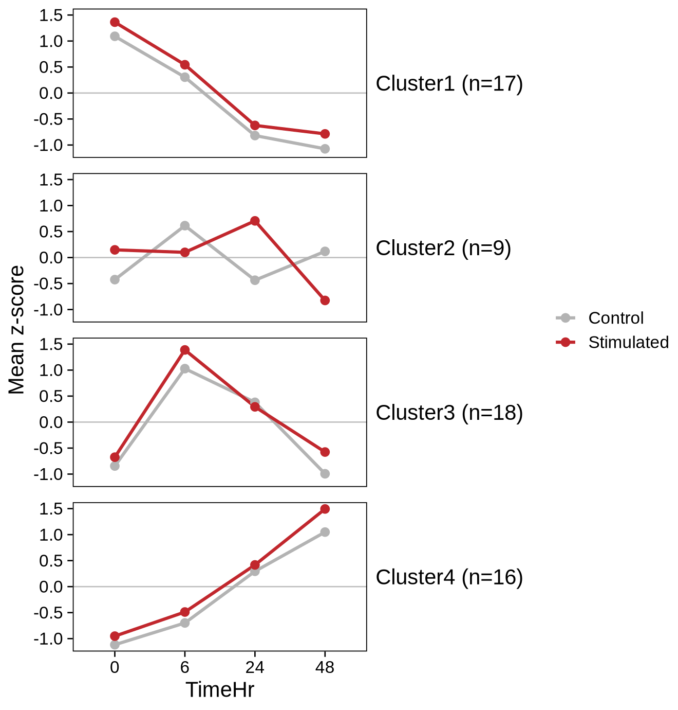

Tutorial
Quick Example: Cluster Temporal Modules
The quick example below uses the bundled heatmap_example dataset. The matrix contains features in rows and samples in columns. The metadata table contains one row per sample and identifies sample ID, time, condition, and replicate.
library(ModuleViz)
data("heatmap_example")
mat <- heatmap_example$mat
meta <- heatmap_example$meta
obj <- longitudinal_cluster(
mat,
meta,
sample_col = "SampleID",
time_col = "TimeHr",
group_col = "Condition",
k = 4,
method = "kmeans",
aggregate_replicates = TRUE,
stability = TRUE
)
longitudinal_heatmap(
obj,
annotation_cols = c("Condition", "TimeHr"),
top_n_label = 3,
cluster_palette = "paired",
file = "moduleviz_heatmap.pdf"
)The resulting object is a longi list containing the z-scored matrix, ordered module assignments, module centroids, stability estimates, reordered metadata, and the parameters used to create the result.
Longitudinal Module Analysis
This section follows the same workflow used in the package vignettes.
Load Packages
library(ModuleViz)
library(data.table)Input Data
ModuleViz requires two plain R objects:
- a numeric matrix, with features in rows and samples in columns;
- a metadata table, with one row per sample.
The metadata must contain a sample ID column matching the matrix column names and a numeric ordering column. A grouping column is optional and can represent condition, genotype, treatment, cell type, or another factor.
dim(mat)
head(meta)Values are z-scored by row inside longitudinal_cluster() unless is_zscore = TRUE is supplied. Feature selection should be done upstream, using differential analysis, a variance filter, or another criterion suitable for the experiment.
Choose The Number Of Modules
choose_k() calculates an elbow diagnostic and mean silhouette width across a range of candidate module numbers.
diag <- choose_k(
zscore_rows(mat),
k_range = 2:10,
method = "kmeans",
chosen_k = 4,
file = "choose_k_elbow.pdf"
)
diag
attr(diag, "suggested_k")The elbow estimate is a diagnostic. The final module number should also reflect biological interpretability and module stability.
Cluster Features
obj <- longitudinal_cluster(
mat,
meta,
sample_col = "SampleID",
time_col = "TimeHr",
group_col = "Condition",
k = 4,
method = "kmeans",
stability = TRUE,
n_resample = 20,
seed = 1
)
obj
obj$stabilityModules are automatically ordered by the time point where each module centroid peaks. Cluster1 is therefore the earliest-peaking module and the last cluster is the latest-peaking module.
Draw The Module Heatmap
longitudinal_heatmap(
obj,
annotation_cols = c("Condition", "TimeHr"),
top_n_label = 3,
zscore_palette = "rdbu",
cluster_palette = "paired",
annotation_palette = "set2",
file = "moduleviz_heatmap.pdf",
width = 5,
height = 6.5
)
Rows are split by module and ordered from early-peaking to late-peaking patterns. Columns are ordered by the numeric time variable and can be split by the optional grouping variable. Metadata columns are shown as annotation bars.
Plot Module Trajectories
pattern_lineplot(
obj,
palette = "set2",
file = "moduleviz_patterns.pdf"
)
The line plot shows the mean z-score trajectory for each module and is useful for describing module behavior in text.
Export Module Tables
write_memberships(obj, prefix = "moduleviz")This writes:
moduleviz_memberships.txtmoduleviz_centroids.txtmoduleviz_stability.txt
The membership table can be used for downstream enrichment analysis one module at a time.